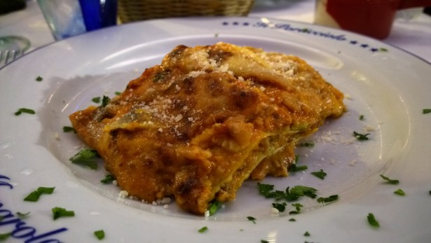

Lasagna

Italian baked pasta dish consisting of wide, flat pasta sheets layered with fillings like a meat ragù, bechamel sauce, and various cheeses, then baked until golden and bubbly.
Ingredients
- Meat
- Onion
- Canned tomatoes
- Fresh herbs
- Sugar
- Spices and seasonings
- Noodles
- Cheese
- Eggs
Steps
- Cook the meat
- Cook the noodles
- Make the cheese layer
- Assemble the lasagna
- Bake the lasagna
Home